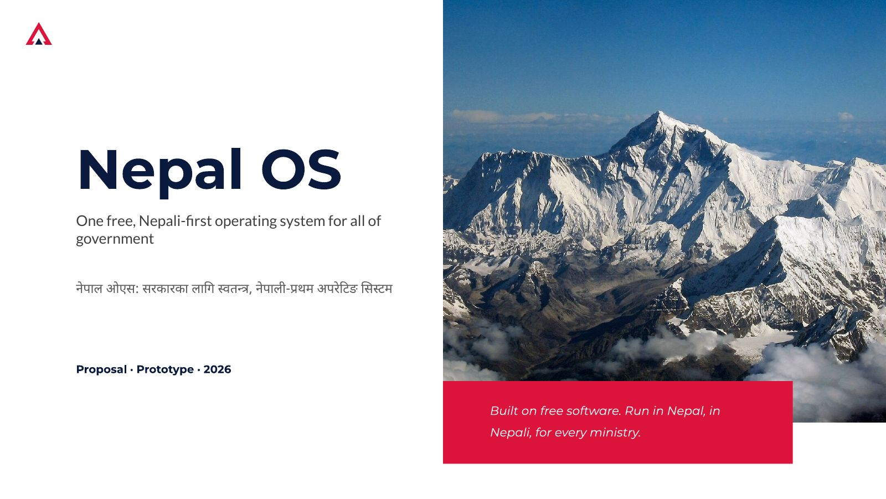
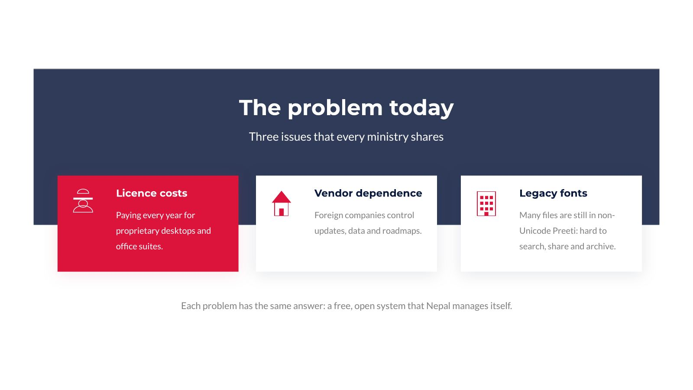
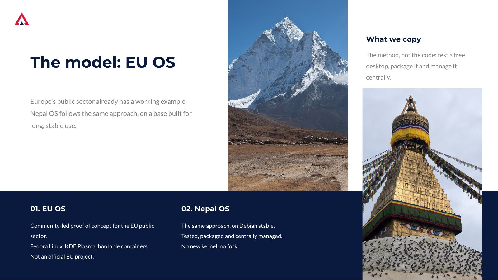
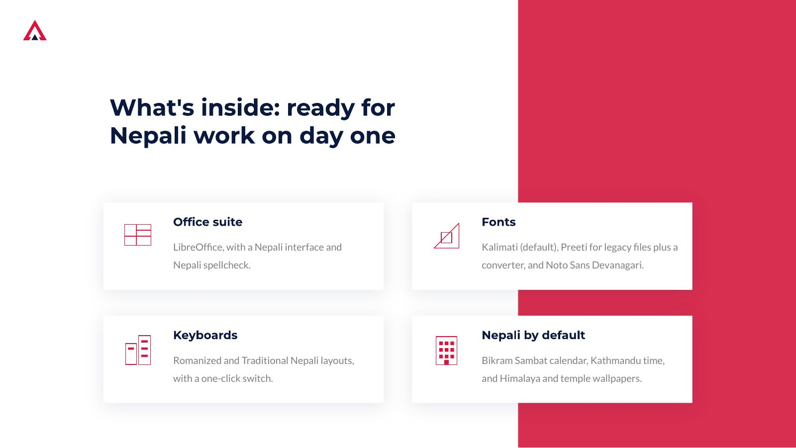
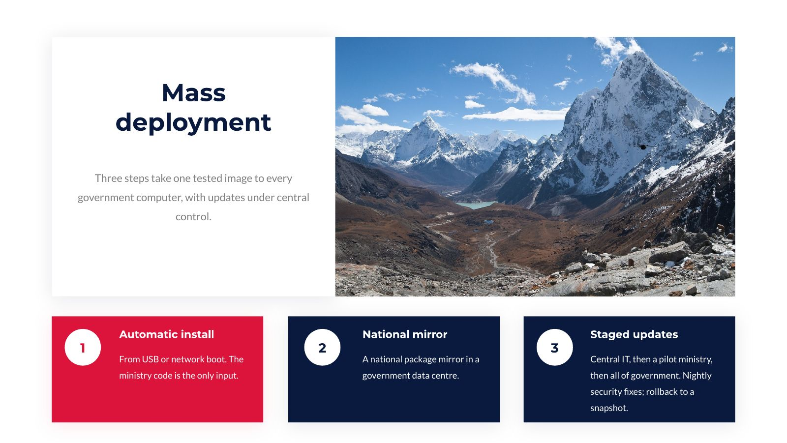
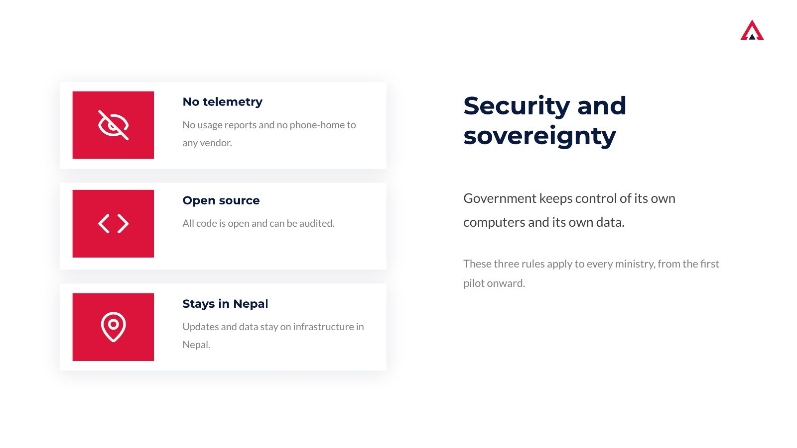
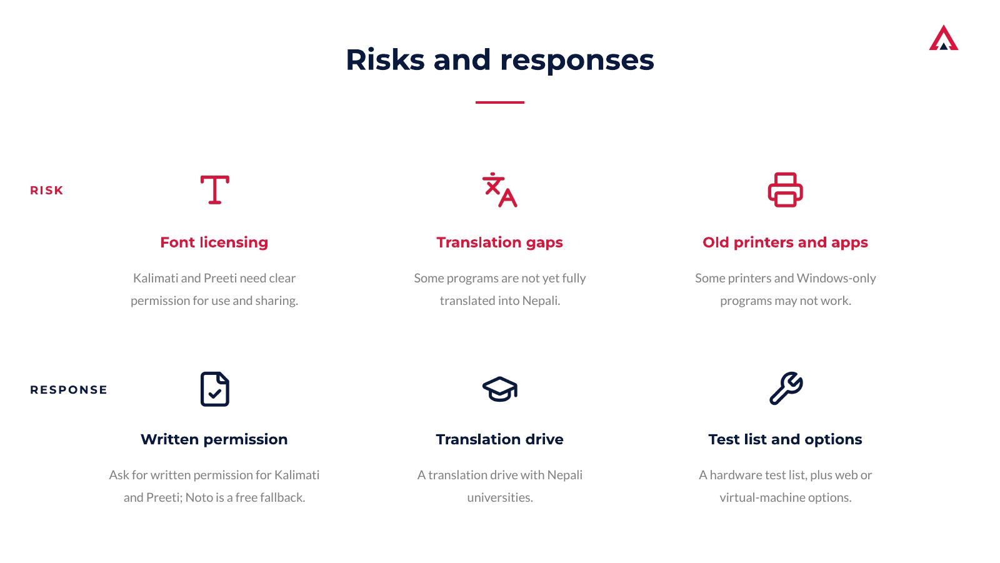
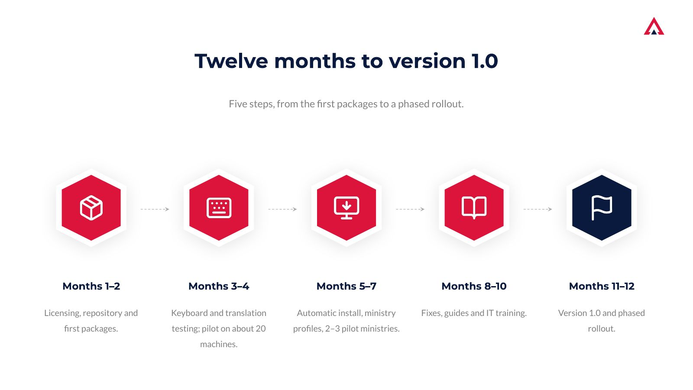
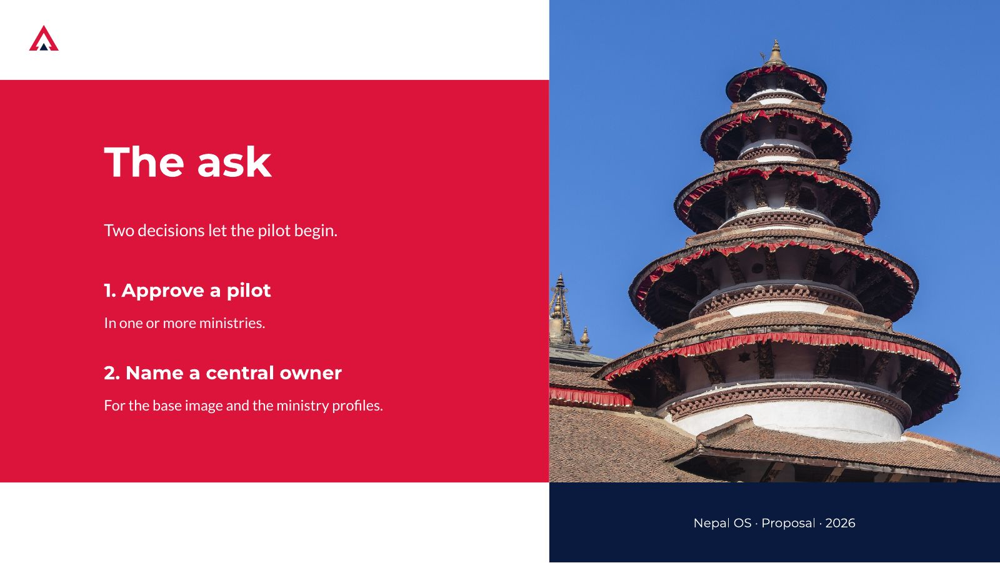

The original proposal deck. Use the arrow keys or the buttons to move between slides.

1 / 9 · Title

2 / 9 · The problem today

3 / 9 · The model: EU OS

4 / 9 · What's inside

5 / 9 · Mass deploymentEarly draft

6 / 9 · Security and sovereignty

7 / 9 · Risks and responses

8 / 9 · Twelve months to version 1.0Early draft

9 / 9 · The askEarly draft
This deck is an early draft. Slides marked “Early draft” describe ideas, such as per-ministry editions, that are no longer planned: NepalOS ships as one edition, Powered by GovTechNepal. One slide on per-ministry branding is left out.